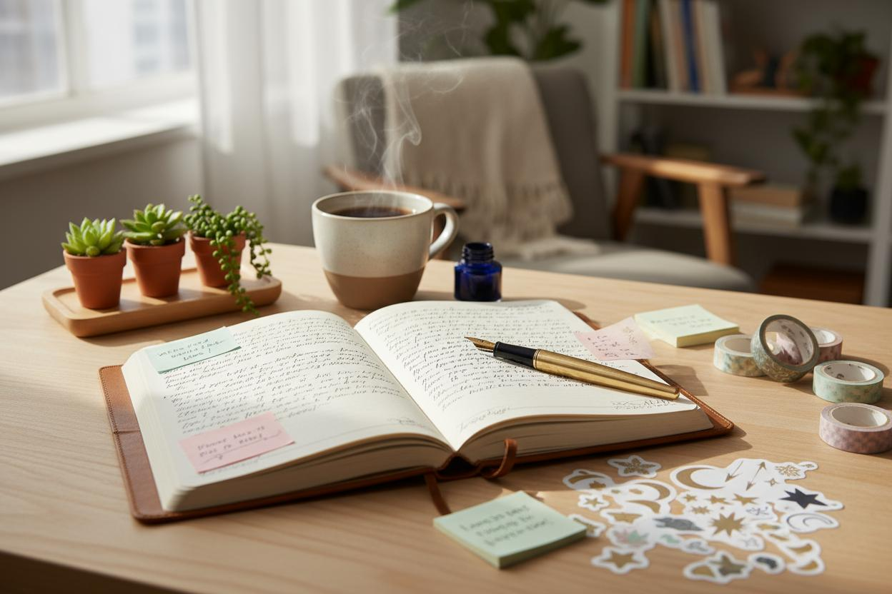

28 Oktober 2026
The Joy of Journaling

A little space for your thoughts, a beautiful way to understand yourself.
Have you ever had so many thoughts in your mind but did not know where to put them? Journaling might be a simple way to start. It is an activity that involves writing down your thoughts, feelings, experiences, or daily activities. You do not need perfect handwriting, expensive stationery, or special writing skills. All you need is a notebook, a pen, and a little time for yourself.
Beyond being a writing activity, journaling can help you understand your feelings and reflect on everyday experiences. You can write about memorable moments, things you are grateful for, personal challenges, or even random thoughts that cross your mind. It can also become a place to record your dreams, organize daily plans, and track your personal progress. Sometimes, looking back at old journal entries reminds us of how much we have experienced and grown.
One of the most enjoyable things about journaling is that there are no strict rules. Some people prefer simple writing, while others enjoy decorating their pages with photographs, stickers, colorful pens, and illustrations. You can create a daily journal, gratitude journal, reading journal, or even a collection of your favorite quotes. There is no right or wrong way to do it because every journal reflects its owner's personality.
You do not have to write several pages every day to enjoy journaling. Start with a few sentences and let your thoughts flow naturally. Remember, journaling is not about creating a perfect notebook to show other people, but about creating a meaningful space for yourself. Sometimes, the smallest words can hold the biggest memories.
“Your journal doesn't need to be perfect. It just needs to be yours.”